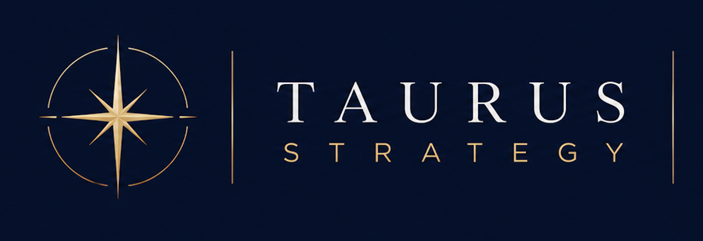

Your business is growing.
But your freedom & peace is shrinking.

Strategy · Decision-making · Expansion
Most founders spend years building a successful business—only to realise they have created a life they no longer want to live inside.
Success should expand your life, not consume it.
I help ambitious founders and leaders redesign how they think, decide and build, so their business creates freedom, supports their vision and grows without costing them who they are.
Book a private strategy session ↓ Discover a different way to buildBut your freedom & peace is shrinking.
But second-guess the ones that matter most.
But not how to slow down.
But lost part of yourself along the way.
Every company reflects the patterns, decisions and identity of the person leading it.
Change the way you operate, and the business begins to change with you.
Reveal the invisible patterns quietly limiting your growth, confidence and decisions.
Combine strategy, structured thinking and intuition to make critical decisions with confidence.
Design a company that supports your energy, priorities and desired way of living.
Grow your influence, revenue and opportunities without sacrificing health, relationships or purpose.
My philosophy
For years, I studied how exceptional founders, business leaders, creators and public figures think, decide and build lives that look different from everyone else’s.
I combined those observations with business strategy, technology, leadership, behavioural patterns, intuition and lessons learned through my own journey and through mentors whose knowledge I invested deeply to access.
Taurus Strategy brings those worlds together. Not to turn you into someone else, but to help you remove what limits you and build from a place that is more conscious, strategic and entirely your own.
We do not separate the business from the person leading it.
We redesign both.
See clearly.
Reveal the pattern.
Rewire the decision.
Design intentionally.
Expand sustainably.
Long-form thinking on strategy, identity, leadership and expansion.
Read →Short observations on decisions, patterns and the realities of leadership.
Explore →Keynotes and conversations on business, AI, leadership and human potential.
Discover →Practical models for clearer decisions and intentional business design.
Use them →Private work
A private strategy session for founders, leaders, professionals ready to make a critical decision, break a limiting pattern or create a business that works differently.
Request a private session